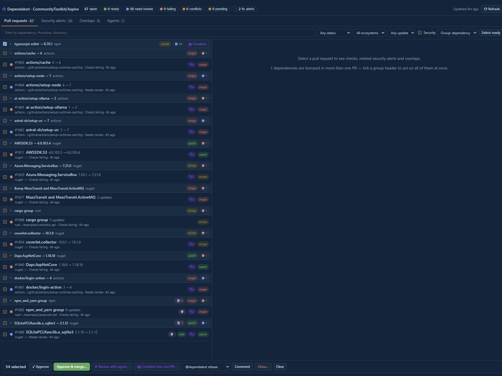

Keeping the repository safe to build and safe to change: reviewing a diff for
vulnerabilities, triaging the dependency drift that Dependabot surfaces, and checking an
agent prompt before it ships.
This chapter assumes the repo's hard security rules hold everywhere else: no secrets or
connection strings are committed, credentials come from configuration or environment
variables, Infor Visual is read-only, and MySQL writes go through stored procedures.
github-security
github-security@0.2.2
Reviews the session's own changes for vulnerabilities and can load
or fix GitHub code-scanning (GHAS) alerts, exposing five tools:
getExtensionState, loadLocalFindings,
fetchGhasFindings, runFindingWorkflow, and
reportFindingStatus.
Checking an uncommitted receiving-module change for injection or secret leaks before
it becomes a pull request.
Loading this repo's open GHAS code-scanning alerts into the canvas so the findings
match what CI reported.
Walking a fix workflow for a selected finding and marking the result verified or
still present.
How to open
Ask for a security review in chat; the findings render in the Security canvas beside
the conversation.
Boundaries
Surfaces and fixes what it is given. It does not invent findings, and a local finding
may only be marked resolved after verification.
The security findings canvas as installed.
dependabot-triage
dependabot-triage@1.0.0
Triages open Dependabot pull requests: checks, mergeability,
related security alerts, and overlap detection, with sign-off, merge, and Dependabot
commands.
Deciding which of a burst of Dependabot PRs can merge now and which need a closer
look first.
Spotting overlapping bumps, such as two PRs pulling the same Windows App SDK
dependency in different directions.
Relating a version bump to the security alert that motivated it before signing off.
How to open
Ask to triage Dependabot PRs in chat; the queue renders in the canvas for review and
action.
Context
This repo pins roughly thirty NuGet packages, including previews such as
Microsoft.Windows.SDK.NET 10.0.18362.6-preview and
Microsoft.WindowsAppSDK 2.4.0, so version bumps need evidence rather than a
rubber stamp.
Boundaries
Organizes and executes triage; it does not prove a bump is safe on its own.

The Dependabot triage canvas as installed.
ai-prompt-engineering-safety-review
testing-automation@1.0.0
Analyses a prompt for safety, bias, security vulnerability, and
effectiveness, returning improvement recommendations.
Reviewing a module-agent prompt before it is committed under .github/ so
it does not instruct an agent to commit secrets.
Checking an end-user guidance prompt for bias or an unsafe instruction before it
reaches a live tool.
Hardening an instruction file against prompt-injection style wording before shipping
it.
Boundaries
Reviews prompts, not code. It flags wording and guidance problems and leaves the code
fixes to the security canvas.
Suggested order. Run github-security on your
own diff first, then dependabot-triage when dependency drift piles up, and the
prompt-safety skill before shipping any agent prompt.